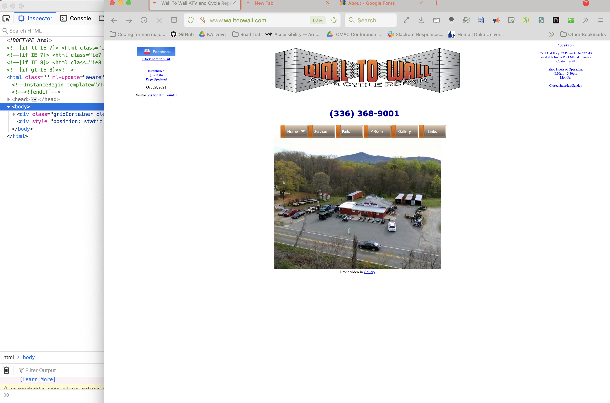
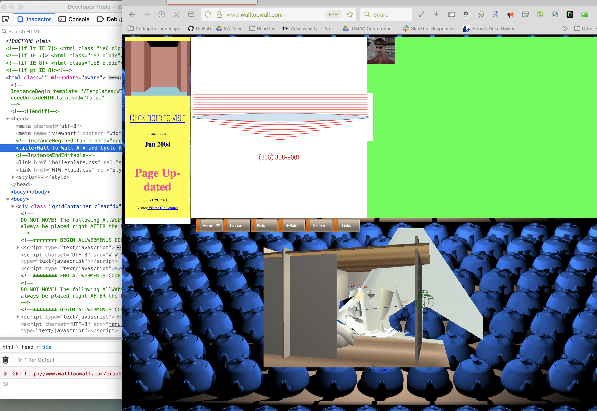
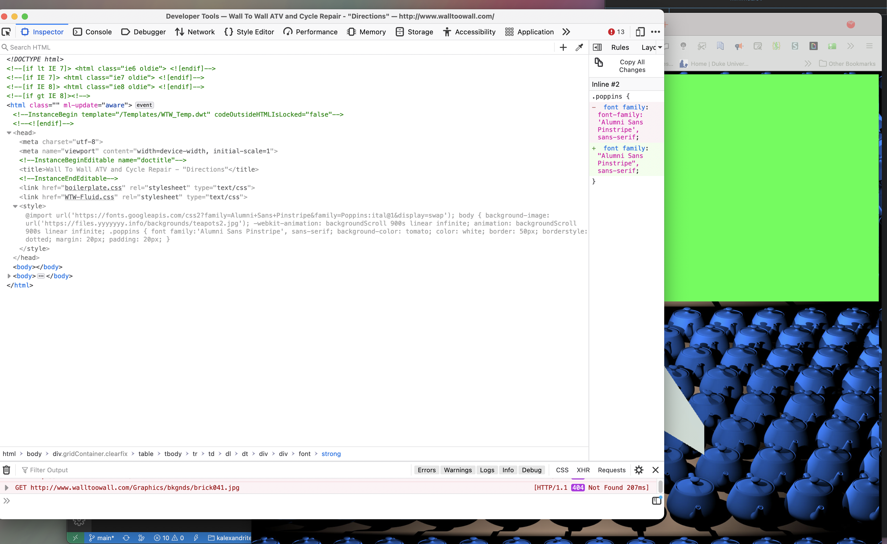
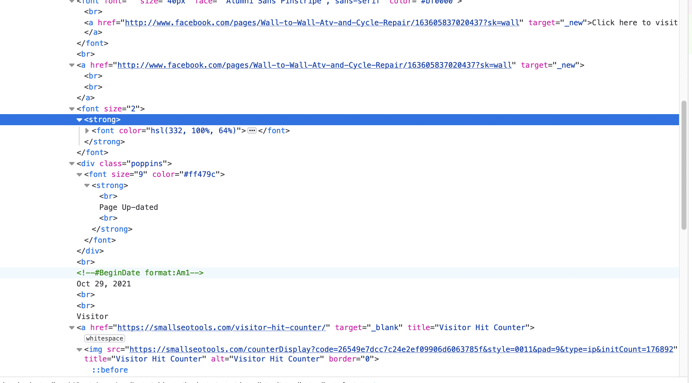

Community Field Research: “personal history of the internet”(10pts)
Due Before Class, August 31, 2022 (Wed)
Reach out to at least 3 people from your community (at home, where family is, where you want to live, where you grew up). Try to find out what internet service is available in their area. What kind of connections are offered (cable, dial-up, fiber, ?) Ask the oldest person you can get ahold of when they first remember the internet being used and, if they have access, how and what they use it for. Ask the youngest person you know the same questions. Then find at least one person in your field, or at least research to the best you can and try to determine how they use the internet, web design, or web communication. Ideally you will feel able to understand how the internet functions both for your community and in the field that you will be working in. Consider who is left out of this research and what requirements the “normal” technology obligate.
Vision Board for the Future
Due in Class, September 7th, 2022 (Wed)
Think about our conversation on Wednesday and our excitement about the possibilities of the internet and designing for the web differently. Can you dream about who and how and why you want to empower through your designs on the internet? What does that sound, feel, or look like? Collect up images, words, and texts that will function as the material of an archive for a future you want to design.
Find and bring to class at least 5 images and 3 texts, these can be anything you have seen, drawn, found, read, written, and mostly anything else you can collect in some way. These don't necessarily have to be digital. We will be discussing how to digitize images and image formats in class. This is also the start of our fortune telling project, and the material you collect will be used toward our next project, so ideally the texts and images are ones you are comfortable sharing with the class.
Bring images and text to class! Have them accesible and ready to share.
Internet Inspector Exploded (10pts (Wed)
Class Critique - September 12th (Mon)
Using the "inspect element" tool, and the "web developer console" in Firefox or Chrome, find a few web pages that use html in the design in such a way that you have code/contenet/elements to modify. Pick a few pages and make changes to the text, color, layout, font or any element that changes our understanding of the website using the sample code linked and your own inventions. For this assignment you will screenshot the before and after layout of the websites, along with the inspector that shows the modified code. All of the individual elements below are from the www3 HTML tutorial page
Make at least 1 of all of these changes on one of the pages you modify, and list the changes you have made below the screenshots of your changes:
Change or add a size to the HTML headings
Change or add an HTML images
Change or add an HTML lists
Make at least 2 of the changes from each of the lists below:
HTML Attributes
Change or add a The title attribute
Change or add a The width and height attributes
HTML Styles
Change or add an HTML styles
As in:
HTML Text Formatting
Change or add Bold formatting
Change or add a Strong formatting
Change or add a Italic formatting
Change or add Emphasized formatting
Change or add a Small formatting
Change or add Marked formatting
Change or add a Subscript formatting using the element
Change or add a Superscript formatting using the element
HTML Quotations and Citations
Change or add Formatting
short quotations
Change or add
Formatting quoted sectionsHTML CSS
Change or add HTML with inline CSS
Change or add HTML with internal CSS
Change or add HTML with external CSS
Change or add HTML with CSS fonts
Change or add HTML with CSS using the id attribute
Change or add HTML with CSS using the class attribute
Change or add HTML and CSS borders
HTML Block and inline elements
Change or add The div element
Change or add The span element
Lastly Try adding a font from google fonts
Also Useful:
HTML Classes
Style all elements with a specified class name
Access elements with a specified class name, with JavaScript
Example site modifications:
Wall To Wall ATV and Cycle Repair - “Directions”

Original Site

Modified Site

Changed in Style

Inline Code Changes
Reading - Class Discussion September 14th:
Lupton, Ellen, et al. Extra Bold, Princeton Architectural Press, 2021.Individual Assignment - Future Telling (20pts - In Progress/Final)
Future Telling Asssignment Requirements
Using the fundamentals of HTML and CSS which you have learned in the tutorials and the concepts we have been working on in class, along with your collected dream images and text you will design 4 “future telling” freestanding web pages that use unique fonts, uploaded images, gifs, patterns etc.
In doing your work, think about the pattern, color, placement of text, and the composition as communicating some sort of foretelling, the beginning of a narrative. These files should be almost completed by the time you arrive to class in order to workshop them with your peers.
You will be uploading your webpages on Wednesday the14th during class and if you have any questions about formatting we can address them Monday before they go live.
-
Overall goal: To develop 4 static web pages that function as narrative elements (building blocks) using the idea of the storytelling decks. These should have a consistent thematic aesthetic, or be 4 completely different designs with internal consistency.
-
Use HTML 5 Boiler plate to start:
-
Use inline and block HTML elements to format text in your page: paragraphs, ordered or unordered lists, underline and highlight text.
-
Use proper html syntax and semantic markup to give your page a hierarchical structure Use proper semantic markup to give your page a hierarchical structure (e.g. an
<h1>element for the main heading of the page, and<h2>and<h3>elements to designate subheadings).. -
Develop a pattern/background from an image and upload this image to an images folder to githubpages.
-
Display this and at least one other image on your page using the
<img>element. -
Use the alt attribute of the
<img>element to describe the image for those who might be unable to see it. -
Add some CSS inside the
<style>element in the<head>section of your document to modify the design of your page (text color, text font family, page background color, etc) or add a separate CSS page to format. -
Add at least one custom google font.
-
Pick one page to be the main page and link the others from there or make a landing page that links to the 4 pages so they are viewable online for the class critique.
-
Your file should be viewable at your name.github.io githubpage.
-
Tutorials due for September 19th: "Hello CSS"from HTML & CSS Is Hard
W3schools.com "CSS Tutorial" - from the CSS Introduction section up to and including the CSS Fonts section)
or
Free Code Camp Learn Basic CSS by Building a Cafe MenuTutorials for September 21st:
Download twine
3 Quick Tutorials on Twine to Begin ProjectOptional: Crafting Meaningful HTML Video on linkedin learning available by signing in through Duke Account - Shibboleth
Group Project - Future telling becomes Collective (20pts - In progress/Final)
Grading Rubric and Group Assignments: September 26th (Mon)
Groups will be to conceptualize the Twine project and set up a group Git Repository (or develop an alternative working method for the project) during class. As you set up your project look for what technical help you need in order to work towards the in-progress game/poem/project for September 28th (Wed) by working together outside of class.
Other Twine Game/Poem Examples:
- Nanopesos by Camila Gomez (Actually simulates budgeting using Chile's wage inequality challenges
- Write a Haiku by Flaminia Grimaldi
- Stars by Lysander
In Progress Critique in Class: September 28th (Wed)
Groups will present their project to eachother in order to test functionality and get feedback on their design. The assignment is graded on preparedness and group participation.
Final Critique in Class: October 3rd, 2022 (Mon)
Using our initial Coding and CSS skills we will be working together in a program called Twine towards developing a narrative, game, or experience using this free application. The project will employ your individual imagery and ideas from our future telling assignment, woven together with supplementary material that the group will provide to create a cohesive narrative or game
This assignment will be graded on how well you have integrated your materials into a synthesized whole, the design motivations and execution and the level of customization and game play you program. We will be discussing the idea of choreography and the kind of spaces we create as a way of orienting ourselves towards accessibility and contending and appreciating difference. How will your group find an identity that is specific and which also addresses some of the internal differences in a way that both appreciates this task without defaulting to normalizing, or erasing the variation of aesthetics and narrative interests? The class rubric for this assignment will be developed collectively.
Notes on Twine Assignment:
- Install Twine on your computer. Make sure to choose the download that corresponds to your computer. macOS for Mac or Windows.exe for windows. Make sure you are using version 2.5.1
- Move the application to your applications folder.
- Open twine. We will be using the story format called SugarCube. To change the default story format, select its card in the Story Formats screen and choose Use as Default Format from the Story Format top toolbar tab. A “Use as Default” sticker will appear on the card to confirm the change. We will be using SugarCube as the story format.
- Read this GitHub for how to set up collaborative repositories to work on stories: Collaboration in Twine Manual on GitHub
- Install twine extension on visual studio
(search for Twee 3 Language Tools) or in Visual Studio the extension id: cyrusfirheir.twee3-language-tools
You will be using Twee - Twine Cookbook Twee 3 specifications: Twee on GitHub
- Create a collaborative repository with a story format for the files set
Sugarcube downloads and documentation: SugarCube
Javascript, the next coding laguage we will explore, is about actions. Think about this Twine assignment as a way to develop a method for approaching navigation and dynamic action by thinking about accessibility and legibility for the user in relationship to the content and context you are designing.
Potentially useful for those interested in Javascript for Twine:
Twine 2.2: Learning Twine: Story JavaScript- Using Javascript in Twinee
- Twine Specs A good introduction to the workflow for twine. This is advanced - but it may be useful to get idea of how to approach the project.">Here is a good introduction to the workflow for twine. This is advanced - but it may be useful to get idea of how to approach the project.
- A Modern Developer’s Workflow For Twine - DEV Community
- Tweego project setup
Final Twine Due - Upload before class Monday (10pts)
Project proposal for Midterm: (10pts)
Proposal Due October 5, 2022 (Wed) in class
Your homework this week is to work on your project proposal.
For next week, and to help you with the proposal I am assigning these tutorials and will be updating the website with them as well:
Read: Ayush Gupta’s “Beginner’s Guide To CSS Grid And Flexbox”
- “Learn CSS Flexbox in 5 Minutes”
- “Flexbox” from HTML & CSS Is Hard
- CSS Tricks’ “A Complete Guide to Flexbox”
And
- Experiment with the Learn Flexbox sandbox environment
For your midterm I am going to ask that for this assignment you use only HTML and CSS unless you have specifically discussed with me how you will be using javascript and why it is necessary (and why it can not be added later.)
(Collaboration is possible/encouraged, please discuss with me before submitting the proposal however.)
This assignment is highly independent but will incorporate the coding and design work we have been doing toward your own content/interests etc.
Your proposal should consider the motivation, audience, values, narrative, context and design influences and inspirations that motivate it.
Proposals may be written and drawn and should cite relevant influences or sources, along with naming the kind of document structure that will be used for shaping the design.
Planning and collecting inspiration will be important towards communicating your ideas and you are encouraged to include as much material as you can collect or generate (even if it is pointing towards experimental processes rather than results) towards helping convey what you aspire to build and present it with your proposal.
Peer evaluation for the midtermMidterm (50pts)
Your projects should be posted by 5 pm Friday October 21st. Critique Monday October 24th, 2022. Evaluations Due Monday October 24th by email katherine.guillen@duke.edu
Please have your midterm project uploaded to github pages and ready to present to the class.
The midterm project should include the following:
- At least 1 HTML page, and one or more CSS files
- CSS Typography (Google Fonts, relative sizing using em and rem units)
- CSS Grid and/or Flex-based layout
*Standard HTML5 code for viewport
- Attributed Media (img, audio, video, or iframe) and content that form coherent objective
Your projects should be posted by 5 pm Friday October 21st. Evaluations will be due Monday October 24th
The midterms grade will be considered in relationship to the critique you provide of your own site, the description of what your project required (rather in coding or in other areas of research and development). Please include what you feel you would do differently, add or want to expand. Along with your own evaluation you will also evaluate the project of 2 of your peers - which I will assign to you.
I will review these critiques and provide you with a final feedback sheet that includes some of these responses as well as a grade that reflects your work, and the evaluation and understanding of you and your peers work. You may choose to keep these critiques anonymous, though I will provide the helpful and useful elements in the summaries of these evaluations.
In the case that you are assigned someone’s project who has used code you are not familiar with, you may speak to me to inquire about where to learn more. These critiques are are open to research and are an opportunity to learn from your peer’s work and gain feedback from those learning along with you.
Written Critique of Midterm (1 separate page per project, submitted as Word document, 1.5 space, Avenir 12 pt type.)
Aim to write a few sentences on each of these area, and use constructive criticisms - illustrated if possible with screen shots and specific code:
- Aesthetics: what are your personal, embodied impressions, as a viewer/reader/listener of the project, considering what you experience as you navigate and what this conveys about what you believe they are trying to communicate and/or accomplish?
- Accessibility, Readability and Ease-of-Use: Describe the project’s imagined or potential audience based on the design of the page. How does it render on your phone? Or a tablet if you have one? Is there anything that you consider specifically assistive, or difficult for some users? Does the text meet standards for readability? With these ideas in mind, what suggestions do you have for improving the reach of the project? *
- Technique: Download the project from GitHub or open the browser inspector. Is the HTML/CSS/JS readable? Can you understand what is being executed by looking at it? Does the organization and formatting make sense and seem efficient and logical? Is there a function that you didn’t know about being used? Are HTML tags used properly with regard to semantics?
- Ethics. Are there privacy, attribution of content or authorship of code concerns you are noticing? What kind of representation or inclusion is present, and how does this relate in regards to their audience? Do you have any specific comments that may assist in helping your fellow student understand something that may be culturally ambiguous, or have a valence they perhaps are not aware of? Is there something they are doing that feels especially inclusive (even if it is subtle, if upon reflection you realize you had this reaction it is worth noting.)
Please make sure to post your projects on GitHub and link them on piazza so that your classmates can find them.
>Re-imaginative Coding: (10pts) (Group/Ind)
Present in class October 31, 2022 (Mon)
This will be an in class assignment to help you think outside of the frame you have been working in with your midterm. Please bring coded material to class and have it uploaded to your GitHub.
Using p5.Js or an alternate experimental coding platform see if you can exchange elements of your midterm projects with each other towards experimenting with them as material. This will be a quick assignment and having midterm material available and participation is all that is necessary to receive the grade.